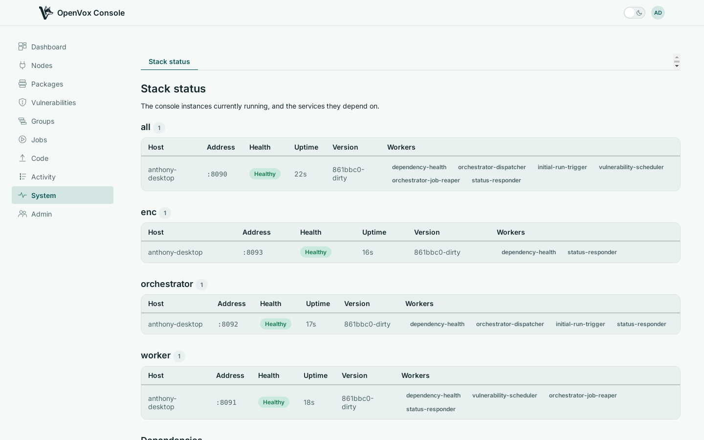

The console is one Go binary, and one container image. The same binary runs a single all-in-one instance, or a fleet of instances each doing one job.
One instance to begin with
The console, access control, classification, orchestration and code deployment run in one process by default. There is nothing to wire together, no internal services to keep in step, and one thing to upgrade.
Split it by job when the fleet grows
One setting chooses what an instance runs, so each part can be scaled and placed on its own. Everything durable lives in Postgres, so any number of each can run at once.
Clustered, and secured by default
Instances join one cluster over mutual TLS, using the certificates your OpenVox CA already issues. A revoked login or node certificate is refused by every instance at once, and a job started on any instance reaches a node connected to any other.
Classification instances attach from the outside in: the connection runs from beside the compilers to the core, so the core never needs a way into that network, and those instances never carry node traffic.
The whole fleet on one page
The System page asks every instance to describe itself: its run mode, health, uptime and background work, and how it sees each service the console depends on. An instance that should have answered and did not is called out rather than left off.
{kind=link}

Add a second all-in-one instance first, then split roles out as load demands. Every step can be undone by setting an instance back to running everything.
Do it
What each of the console's run modes serves and runs, and what each one needs configured.
Cluster a second console instance, split instances into run modes, and place classification next to the compilers.
OpenVox Console ships as container images, built for amd64 and arm64 on every push, and as a single binary. The install guides take you from an empty host to a working deployment - openvoxserver, openvoxdb, Postgres and the console - with containers or with packages.